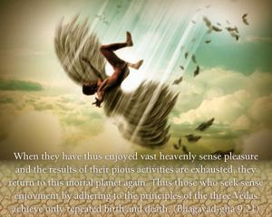
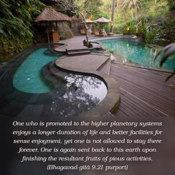

When they have thus enjoyed vast heavenly sense pleasure and the results of their pious activities are exhausted, they return to this mortal planet again. Thus those who seek sense enjoyment by adhering to the principles of the three Vedas achieve only repeated birth and death.


One who is promoted to the higher planetary systems enjoys a longer duration of life and better facilities for sense enjoyment, yet one is not allowed to stay there forever. One is again sent back to this earth upon finishing the resultant fruits of pious activities. He who has not attained perfection of knowledge, as indicated in the Vedānta-sūtra (janmādy asya yataḥ), or, in other words, he who fails to understand Kṛṣṇa, the cause of all causes, becomes baffled about achieving the ultimate goal of life and is thus subjected to the routine of being promoted to the higher planets and then again coming down, as if situated on a ferris wheel which sometimes goes up and sometimes comes down. The purport is that instead of being elevated to the spiritual world, from which there is no longer any possibility of coming down, one simply revolves in the cycle of birth and death on higher and lower planetary systems. One should better take to the spiritual world to enjoy an eternal life full of bliss and knowledge and never return to this miserable material existence.